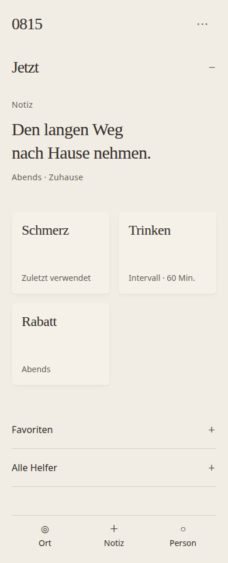
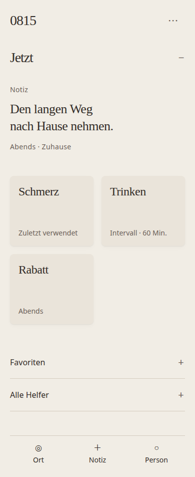

A · Editorial Material
Offene Lesefläche, Tageskapitel und kleine Zeitmarginalie. Die zurückhaltende Tiefe bleibt bei den Werkzeugen; Gedanken brauchen keine Hülle.
Studie öffnen ↗

Historischer Stand 0.6.5 · Aktuell: Mono Editorial · 0.6.6
0815 / Signature v2 / Zwei gesichtete Passes
Dieselbe App, dieselbe ruhige Grundhaltung. A gewinnt über Lesekomposition, B über eine fein abgestufte Objektfläche. Ausgewählt und integriert: A · Editorial Material. Die vorherige Richtung C ist verworfen.
Anwendung öffnen · Entscheidung und Prüfbericht · Selbstkritik nach Pass 1
Offene Lesefläche, Tageskapitel und kleine Zeitmarginalie. Die zurückhaltende Tiefe bleibt bei den Werkzeugen; Gedanken brauchen keine Hülle.
Studie öffnen ↗
Etwas dunklere Werkzeugflächen, kleine Rundungen und leisere Lesestaffelung. Nach dem zweiten Pass weniger Kartenwirkung, aber weiterhin mehr sichtbare Gestaltung.
Studie öffnen ↗